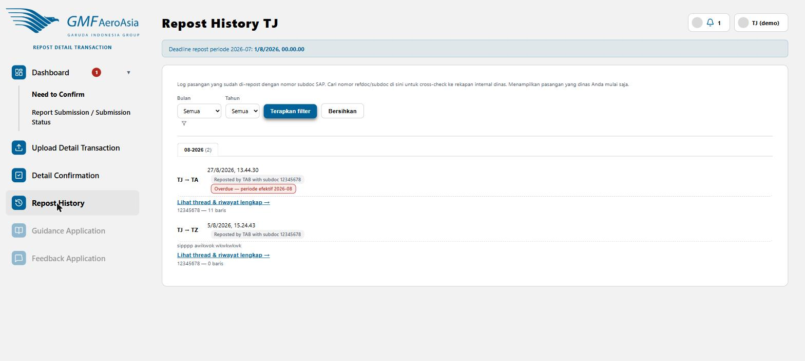

Log pasangan yang sudah di-repost TAB ke SAP (dinas Anda)
rdt/repost-history

- Filter berdasarkan Bulan/Tahun, lalu klik Terapkan filter.
- Setiap entri menampilkan nomor subdoc SAP hasil posting TAB — gunakan nomor ini untuk cross-check ke rekapan internal dinas Anda.
- Klik Lihat thread & riwayat lengkap untuk membuka diskusi lengkap pasangan tersebut.
Badge "Overdue" muncul kalau transaksi baru selesai dikonfirmasi setelah deadline periode berjalan — sistem otomatis mencatat transaksi tersebut masuk ke periode efektif bulan berikutnya, dan badge ini bersifat permanen (tidak hilang meski deadline baru diatur ulang).
Catatan: PIC hanya melihat riwayat dinas sendiri. Untuk melihat riwayat lintas-dinas, lihat panduan "Repost History" versi TAB.